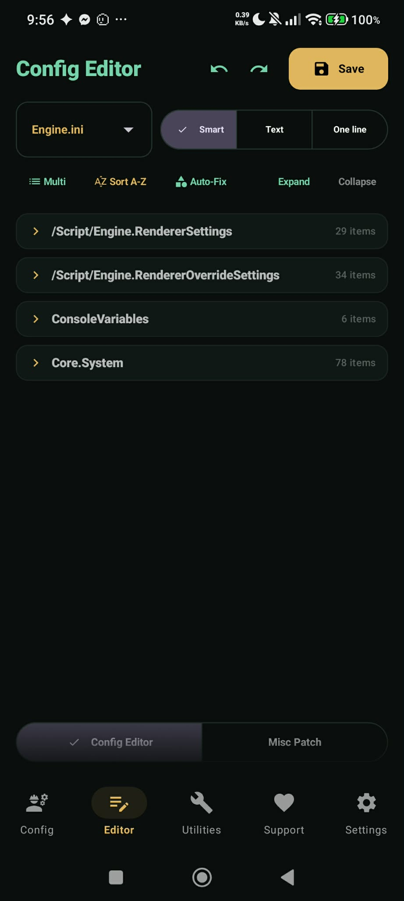
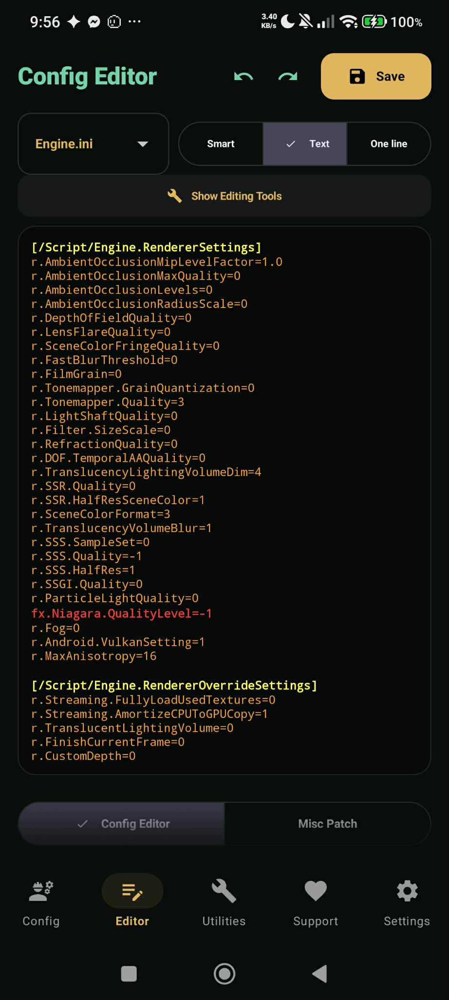
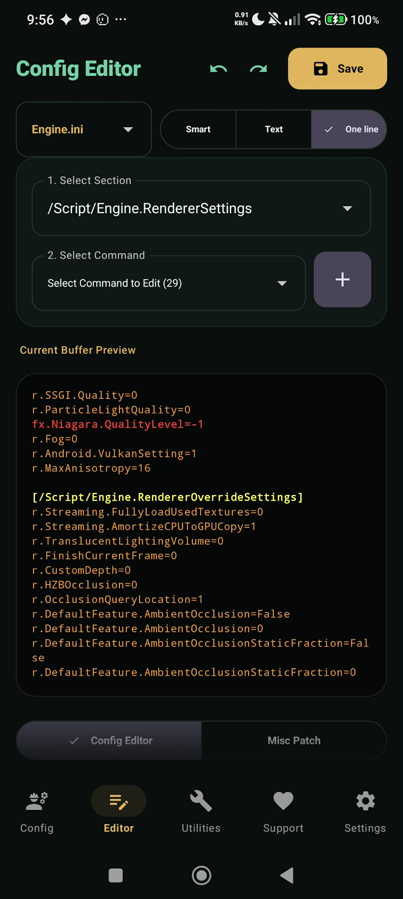

Live Config Editor Overview
The built-in Config Editor provides a flexible, mobile-optimized environment for modifying active Unreal Engine configuration files (Engine.ini, DeviceProfiles.ini, Scalability.ini, GameUserSettings.ini) directly on your device.
Target files are selected via the top-left file dropdown and read off device via ShizukuManager.readLogFile(). Files are cached in memory for 0ms sub-screen switching. Color coding: Gold for core INIs, Green for GameUserSettings.ini, and Gray for others.
Three Tailored Editing Modes



Detailed Editing Mode Breakdown
Structured Section Cards
- Sort A-Z Button: Re-arranges entries within every section alphabetically by key name using
sortSmartSectionsAlphabetically(). - Auto-Fix / Auto-Categorize Button: Re-categorizes CVars into canonical section headers automatically.
- Multi-Select & Bulk Delete: Enables checking multiple items in expanded sections and deleting them in a single batch.
- Steppers & Negative Numbers: Inline steppers with full negative number support.
Manual Syntax-Highlighted Editor
- Isolation Search Mode: Filters raw text buffers to display only lines matching the search query.
- Search & Replace Toolbar: Features "Replace Next" and "Replace All" actions across large config files.
- Font Size Control: Adjustable slider from 8sp to 24sp for comfortable viewing.
Quick Single CVar Injection
- Dropdown selector for target section and CVar command.
- Interactive "Add CVar" and "Edit CVar" dialogs with real-time section guard validation notes.
- Live buffer preview card at the bottom displaying exact formatted output before saving.
Engine CVar Section Guards & Enforcement
To prevent game engine overrides and unread commands, the patcher enforces canonical Unreal Engine section placement rules across all editor views:
| Category | Canonical Section Header | Guard Rule & Prefix |
|---|---|---|
| Rendering Settings | [/Script/Engine.RendererSettings] |
Any CVar starting with r. (except r.SupportAllShaderPermutations). |
| Rendering Overrides | [/Script/Engine.RendererOverrideSettings] |
Accepts r.SupportAllShaderPermutations, any r. CVars, or dp. commands. Whitelisted during Auto-Fix. |
| Streaming Settings | [/Script/Engine.StreamingSettings] |
Any CVar starting with s.. |
| Garbage Collection | [/Script/Engine.GarbageCollectionSettings] |
Any CVar starting with gc.. |
| Network Settings | [/Script/Engine.NetworkSettings] |
n.VerifyPeer, p.EnableMultiplayerWorldOriginRebasing, NetworkEmulationProfiles. |
| Cooker Settings | [/Script/UnrealEd.CookerSettings] |
Any CVar starting with cook.. |
| Whitelisted Sections | [Core.Paths] / [Core.System] |
Paths and system settings are completely whitelisted and never flagged or moved. |
| Universal Container | [SystemSettings] / [ConsoleVariables] |
General blocks that accept ANY CVars safely. |
- Auto-Fix Sections: Auto-groups CVars into canonical headers or
[SystemSettings]and saves. - I know what I'm doing: Bypasses warnings and saves as-is.
- Cancel: Cancels save.
- Engine.ini Prefix Stripping: Any line starting with
CVars=,+CVars=, or.CVars=is flagged in Vibrant Red. Auto-Fix automatically strips the prefix while retaining the actual CVar key and value. - DeviceProfiles.ini Formatting: Automatically formats CVar lines as
CVars=Key=Valuewhile preserving metadata profile pointers (BaseProfileName,DeviceScore,DeviceType,HardwareLevel).
Misc Patching (UE4CommandLine.txt)
Tapping Misc Patch at the bottom of the Editor screen accesses engine launch flag controls pushed directly to .../files/UE4Game/Client/UE4CommandLine.txt:
- -SkipSplash: Checkbox to skip game launch splash screens.
- -ForceEnableCSharpEnvironment: Checkbox to force enable Kuro's experimental C# scripting pipeline.
- Custom Launch Flags: Dialog allowing users to enter custom engine launch flags.